Devlog Six Overview
I should first state that this addition isn't as large as I would've liked or originally planned. That's because I had a lot going on in my personal life during the creation of this update. And working on all the enemies and mobs that I currently have has demotivated me a little from the project. It wasn't as much fun to work on the game when I spent my little free time I was able to devote to the project just doing very tedious and repetitive work. Not that I wasn't enjoying it, but just that I really want to start fully implementing them into the game now. Or just do something else.
So, let's talk about what this update actually is. I have been adding the models and textures for a bunch of mobs and enemies into the game. That means that I have been opening Blender a lot recently and doing some modelling and uv work. Which I haven't done in a while, so that was a nice change of pace.
Now, I have been working on the AI for the enemies and mobs, but that will possibly come in the next devlog. I really want to devote some serious time to getting it better. I was originally using Unity's NavMesh system, but I found that to not really be what I want for the mobs. Ironically enough, it can make some enemies too smart. For instance, zombies should be dumb, and just walk straight to the player, even if there is a wall in the way. I don't think they should be smart enough to walk around. And the NavMesh system wouldn't really be great for enemies like Spiders, which can climb walls. Or for anything that can fly. So, I think I'm just going to write my own code for everything which I would prefer as an end result anyways. I'd be learning a lot more by doing it that way as well. Here's a quick peek into the enemy AI to prove that I am working on it, though it's nothing impressive or interesting yet. It's just a teaser.
I know there's a lot of problems with the enemy AI in the video above, but it's just to have something down and in the game. I'll work more on that in another devlog. This update is not about that. I just wanted to tease it off and see stuff start moving.
Main Features
Of course the main feature of this devlog is the enemy and mob models and textures. It'll be obvious right away, that I am not an artist. I might want to redo some of the textures in the future. But for now, they're staying. Here's a list of pictures for all the enemies and mobs.
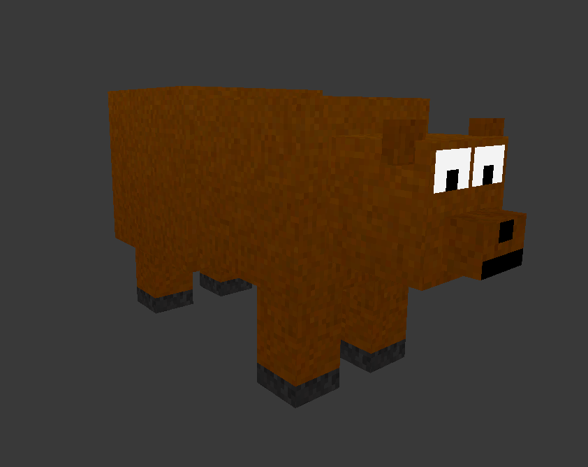
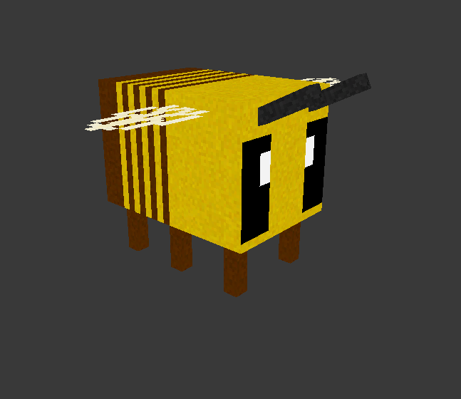
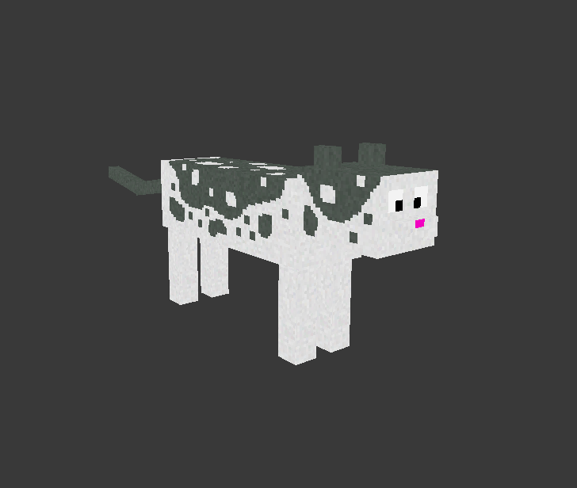
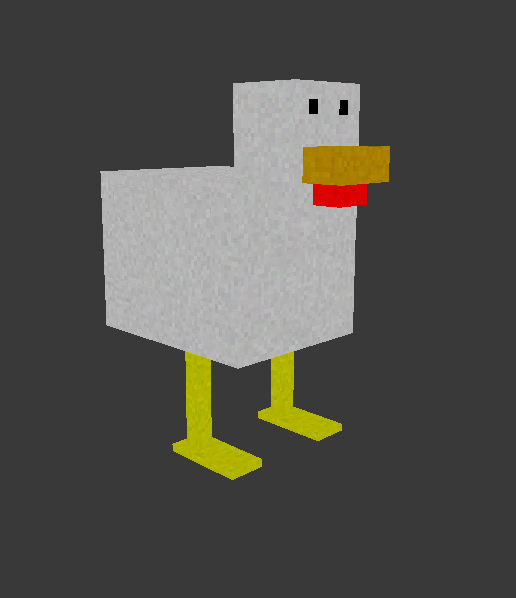
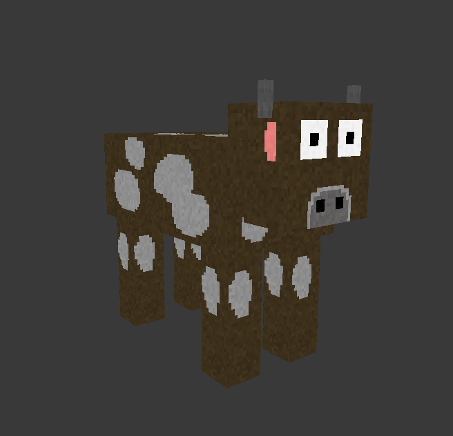
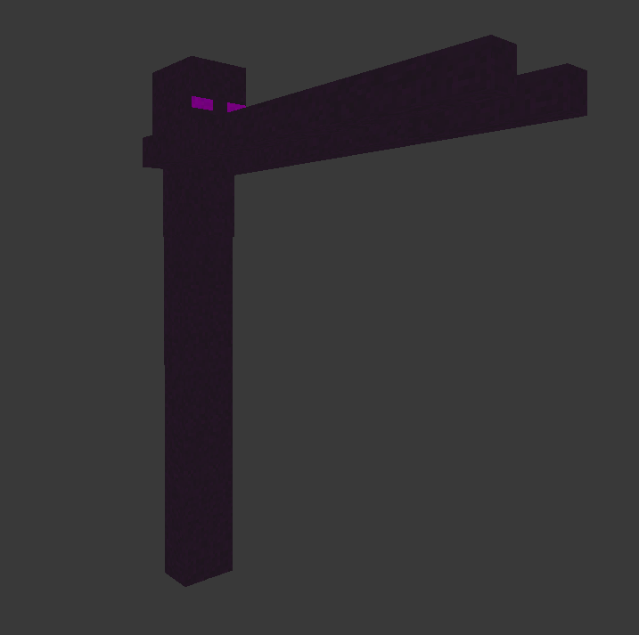
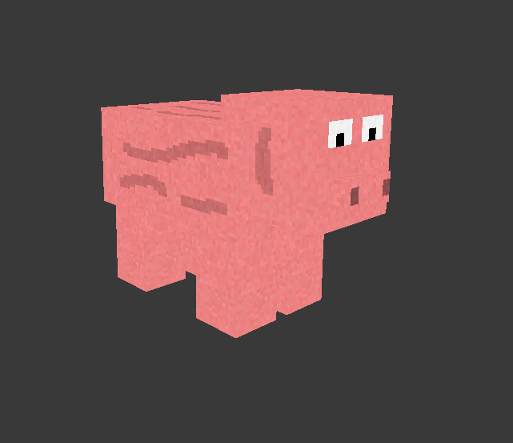
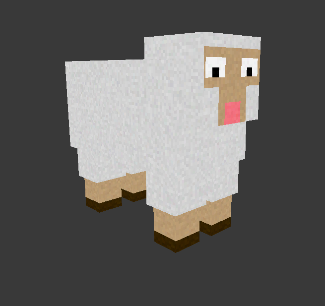
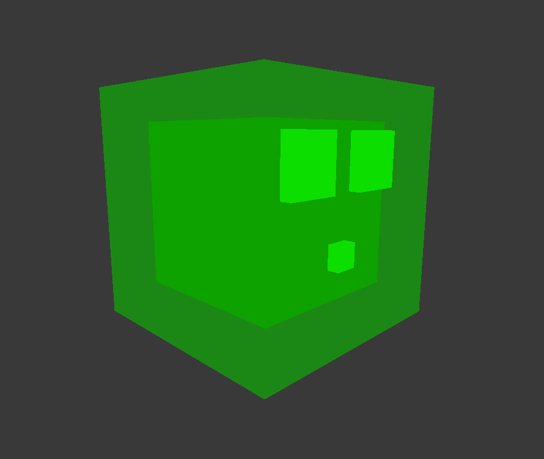
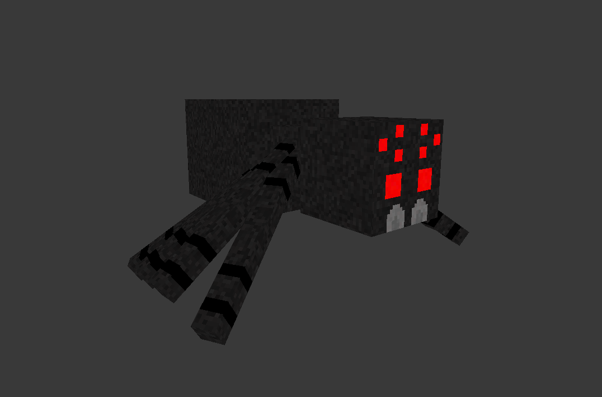
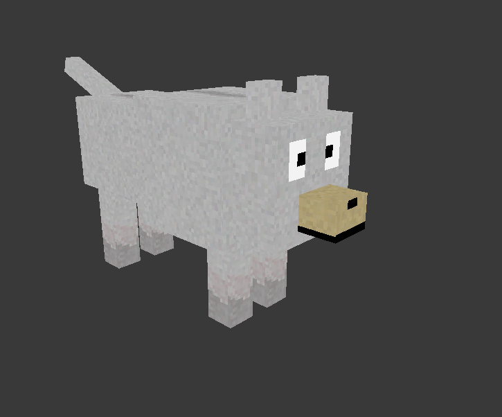
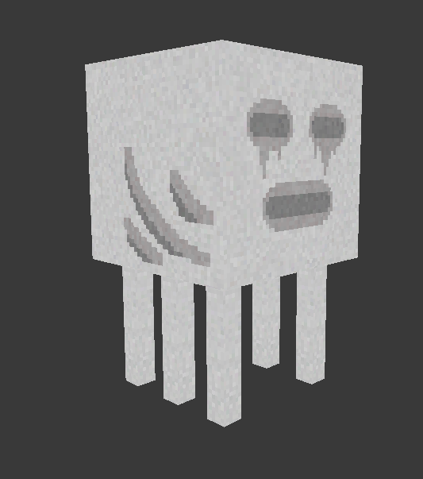
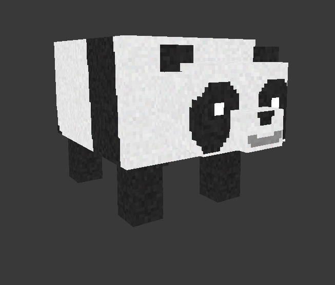
The enemies and mobs are divided up into enemy or mob of course. I define them by a single main characteristic: do they attack the player with or without player interaction. For enemies like zombies or spiders, they'll attack the player right away. Those are enemies. But for mobs like bees or wolves, those will only attack the player if they get attacked first. Otherwise, they'll just go about their business - so a mob. Then there are the mobs like sheeps or cows, which will just run away if attacked.
Blocks
At this point with every update of the project, it's expected I'll have at least a few new blocks to add. For this update, that would be the different variations of the sand block. I added the sand and sandstone block off to the left side, so that you could see all the different sand blocks together.
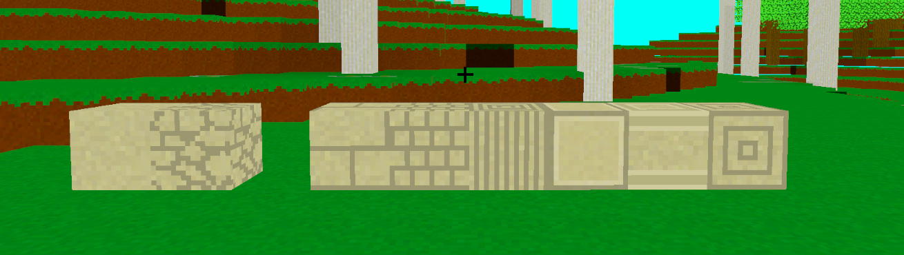
Items
In the last devlog I mentioned that I accidentally didn't add the stone variations for tools, and that I would add them in between updates. I just want to mention that I did actually do that. Here is proof, if you don't believe me.
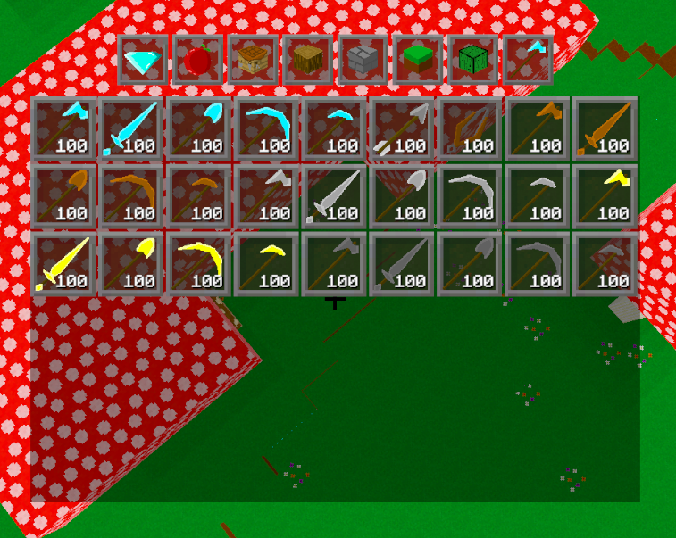
I have also been adding in a few items related to the enemies and mobs that I've added into the game. Nothing really worth talking about right now, but just know things are being worked on that I don't always talk about.
Mobs
I only added this section to introduce it as a thing that I will start doing in future devlogs. If I add more mobs or do any side tasks related to them, then they will be in this section of the page for all future devlogs. Unless of course, the devlog itself is as a whole talking about the subject.
There are some things I want to talk about here already though. Firstly, I have made all the models good to go and ready for animations. Basically what I mean by that is that stuff like legs are all seperate objects, so that they can be animated seperately for things like walking. Stuff like that.
There's also another quick thing I want to talk about related to the enemies and mobs: variations. Even though I don't have that many mobs or enemies in the game, I have the ability now to make a lot more very quickly. And that's because of the models and uv's already being done on them. For instance, I have the zombie model. A skeleton would use the exact same model, but just with a different texture. Then there is all the different sheep colours. Then there is the slime. I could have a magma cube in the game, and use the same model as the regular slime. Actually, while writing this, I had the urge to add in those sheep variations, so here you go.
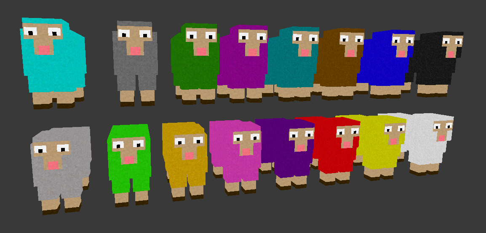
Conclusion
I really wish I could've done more for this update, but I just need to start working on other things in the project. And there are always so many other things I could be working on. Which brings me to something I want to discuss. The next devlog may take a longer time to get released. Currently when working on a devlog, I just choose something I feel like working on, and center the devlog around that. Which is fine, but I really want to start planning more on what I'm going to do in the project. So, I'm gonna take some time and start planning out the devlogs for the next while. I may open up Trello for the first time in a while. Though, knowing me, I'm just going to use a notepad.
I also mentioned earlier that the next devlog may be related to Enemy/ Mob AI. That is still very much possible, but I may change my mind and start working on more essential parts of the game experience. For instance, getting a furnace into the game. Or a method to get to the Inferno Realm and back. Or hunger, or stairs/ slabs, or hunger, or so many other very important things to work on. Right now, enemies can move towards the player. That's something, which is more than a lot of other parts of the game.
This wasn't really a conclusion, and just more of a 'by the way', but whatever. You better have enjoyed reading this.
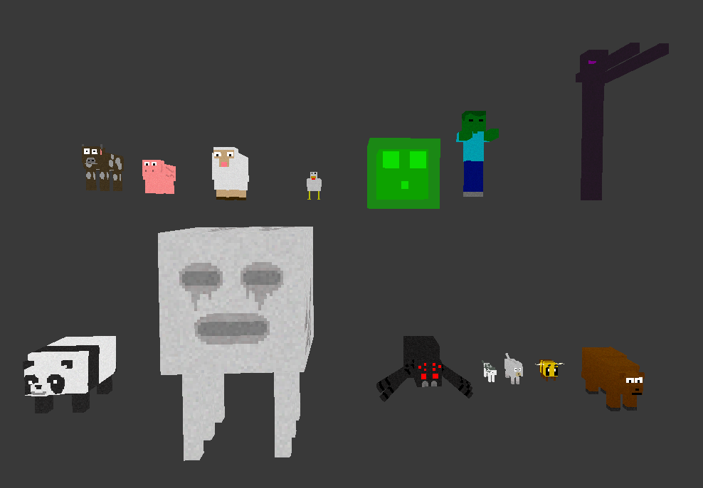